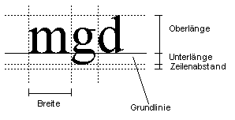
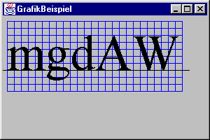
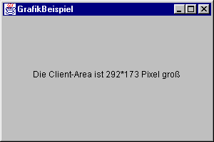

25.3 Eigenschaften von Schriftarten
Die Klasse Font
besitzt Methoden, um Informationen über den aktuellen Font zu
gewinnen:
public String getFamily()
public int getStyle()
public int getSize()
|
java.awt.Font |
getFamily
liefert den systemspezifischen Namen eines Fonts, getStyle
den Style-Parameter und getSize
die Größe des Fonts. Auf diese Weise lässt sich ein
neues Font-Objekt als Variation eines bestehenden Fonts erzeugen.
Das folgende Beispiel zeigt eine paint-Methode,
die den zur Anzeige verwendeten Font bei jedem Aufruf um 1 Punkt vergrößert:
001 /* SchriftGroesser.inc */
002
003 public void paint(Graphics g)
004 {
005 Font font = getFont();
006
007 if (font.getSize() <= 64) {
008 setFont(
009 new Font(
010 font.getFamily(),
011 font.getStyle(),
012 font.getSize() + 1
013 )
014 );
015 }
016 g.drawString("Hello, World",40,100);
017 }
|
SchriftGroesser.inc |
Listing 25.4: Vergrößern der Schriftart
Oft benötigt man Informationen über die Größe
eines einzelnen Zeichens oder eines kompletten Strings. Anders als
in textbasierten Systemen ist die Größe von Schriftzeichen
bei der Programmierung unter einer grafischen Oberfläche nämlich
nicht konstant, sondern von der Art des Fonts, dem Ausgabegerät
und vor allem von der Breite der Zeichen selbst abhängig.
Das Größenmodell von Java sieht für ein Textzeichen
fünf unterschiedliche Maßzahlen vor (siehe Abbildung 25.5),
die teilweise zu den im Schriftsatz verwendeten Begriffen kompatibel
sind. Wichtigste Bezugsmarke für die verschiedenen Maße
ist dabei die Grundlinie des Zeichens,
die den oberen und unteren Teil voneinander trennt. Die Unterlänge
gibt die Länge zwischen Grundlinie und unterer Begrenzung des
Zeichens an. Die Oberlänge bezeichnet
die Länge zwischen Grundlinie und oberem Rand des Zeichens. Die
Breite eines Zeichens ist der Abstand
vom linken Rand des Zeichens bis zum linken Rand des darauffolgenden
Zeichens. Der Zeilenabstand ist der
Abstand zwischen dem unteren Rand einer Zeile und dem oberen Rand
der nächsten Zeile. Die Höhe
ist die Summe aus Oberlänge, Unterlänge und Zeilenabstand.

Abbildung 25.5: Größenmaßzahlen für Fonts in
Java
Zur Bestimmung der Größeneigenschaften von Zeichen wird
die Klasse FontMetrics
verwendet. FontMetrics
ist eine abstrakte Klasse, die nicht direkt instanziert werden kann.
Stattdessen wird sie durch Aufruf der Methode getFontMetrics
aus dem Grafikkontext gewonnen:
public FontMetrics getFontMetrics(Font font)
public FontMetrics getFontMetrics()
|
java.awt.Graphics |
Die parameterlose Variante dient dazu, Metriken zum aktuellen Font
zu ermitteln, an die andere kann der zu untersuchende Font als Argument
übergeben werden. Nun stehen Methoden zur Verfügung, die
zur Bestimmung der genannten Eigenschaften aufgerufen werden können.
Nachfolgend werden die wichtigsten von ihnen vorgestellt.
Mit charWidth
wird die Breite eines einzelnen Zeichens ch
bestimmt, mit stringWidth
die eines kompletten Strings. Der Rückgabewert dieser Methoden
wird dabei stets in Bildschirmpixeln angegeben. Bei der Anwendung
von stringWidth
werden auch Unterschneidungen oder andere Sonderbehandlungen berücksichtigt,
die bei der Ausgabe der Zeichenkette erfolgen würden.
public int getAscent()
public int getDescent()
public int getHeight()
public int getLeading()
|
java.awt.FontMetrics |
getAscent
liefert die Oberlänge des Fonts, getDescent
die Unterlänge, getLeading
den Zeilenabstand und getHeight
die Höhe. Obwohl diese Informationen für die meisten Zeichen
des ausgewählten Fonts gültig sind, garantiert Java nicht,
dass dies für alle Zeichen der Fall ist. Insbesondere kann es
einzelne Zeichen geben, die eine größere Ober- oder Unterlänge
haben. Zur Behandlung dieser Sonderfälle gibt es zusätzliche
Methoden in FontMetrics,
die hier nicht näher behandelt werden sollen.
Das nachfolgende Beispiel zeigt eine paint-Methode,
die einige Schriftzeichen in 72 Punkt Größe zusammen mit
einem 10*10 Pixel großen Koordinatengitter ausgibt. Zusätzlich
gibt das Programm die Font-Metriken aus:
001 /* Fontmetriken.inc */
002
003 public void paint(Graphics g)
004 {
005 Font font = new Font("TimesRoman",Font.PLAIN,72);
006
007 //---Linien
008 g.setColor(Color.blue);
009 for (int x = 10; x <= 260; x += 10) {
010 g.drawLine(x,30,x,130);
011 }
012 for (int y = 30; y <= 130; y += 10) {
013 g.drawLine(10,y,260,y);
014 }
015 //---Schrift
016 g.setColor(Color.black);
017 g.drawLine(0,100,270,100);
018 g.setFont(font);
019 g.drawString("mgdAW",10,100);
020 //---Font-Metriken
021 FontMetrics fm = getFontMetrics(font);
022 System.out.println("Oberlänge = " + fm.getAscent());
023 System.out.println("Unterlänge = " + fm.getDescent());
024 System.out.println("Höhe = " + fm.getHeight());
025 System.out.println("Zeilenabstand = " + fm.getLeading());
026 System.out.println("---");
027 System.out.println("Breite(m) = " + fm.charWidth('m'));
028 System.out.println("Breite(g) = " + fm.charWidth('g'));
029 System.out.println("Breite(d) = " + fm.charWidth('d'));
030 System.out.println("Breite(A) = " + fm.charWidth('A'));
031 System.out.println("Breite(W) = " + fm.charWidth('W'));
032 System.out.println("---");
033 }
|
Fontmetriken.inc |
Listing 25.5: Anzeige von Font-Metriken
Die Grafikausgabe des Programms ist wie folgt:

Abbildung 25.6: Anzeige von Font-Metriken
Zusätzlich werden die Font-Metriken auf die Konsole geschrieben:
Oberlänge = 73
Unterlänge = 16
Höhe = 93
Zeilenabstand = 4
---
Breite(m) = 55
Breite(g) = 35
Breite(d) = 36
Breite(A) = 52
Breite(W) = 68
Als abschließende Anwendung der Font-Metriken wollen wir Listing 25.1
wie versprochen komplettieren und den Text zentriert ausgeben:
001 /* Zentriert.inc */
002
003 public void paint(Graphics g)
004 {
005 int maxX=getSize().width-getInsets().left-getInsets().right;
006 int maxY=getSize().height-getInsets().top-getInsets().bottom;
007 String s="Die Client-Area ist "+maxX+"*"+maxY+" Pixel groß";
008 FontMetrics fm = g.getFontMetrics();
009 int slen = fm.stringWidth(s);
010 g.drawString(
011 s,
012 getInsets().left + ((maxX - slen)/2),
013 getInsets().top + (maxY/2)
014 );
015 }
|
Zentriert.inc |
Listing 25.6: Zentrierte Textausgabe
Die Programmausgabe ist:

Abbildung 25.7: Zentrierte Textausgabe